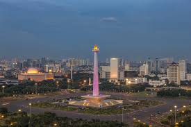

Jakarta (/dʒəˈkɑːrtə/; Indonesian pronunciation: [dʒaˈkarta]), officially the Special Capital Region of Jakarta (Indonesian: Daerah Khusus Ibukota Jakarta), is the capital and largest city of Indonesia. Situated on the northwest coast of the world's most populous island of Java, it is the centre of economy, culture and politics of Indonesia with a population of more than ten million as of 2014.[5][8] Albeit only covers 699.5 square kilometres (270.1 sq mi), the smallest among any Indonesian provinces, its metropolitan area covers 6,392 square kilometres (2,468 sq mi); it is the world's second most populous urban area after Tokyo, with a population of about 30 million as of 2010.[9] Jakarta's business opportunities, as well as its potential to offer a higher standard of living, have attracted migrants from across the Indonesian archipelago, making it a melting pot of numerous cultures.[10] Jakarta is nicknamed the "Big Durian", the thorny strongly-odored fruit native to the region,[1] as the city is seen as the Indonesian equivalent of New York (Big Apple).
